Chapter 10 Regression
We continue to want to examine the relationship between a predictor variable and a response but now we consider the case that the predictor is continuous and the response is also continuous. In general we are going to be interested in finding the line that best fits the observed data and determining if we should include the predictor variable in the model.
## `geom_smooth()` using formula 'y ~ x'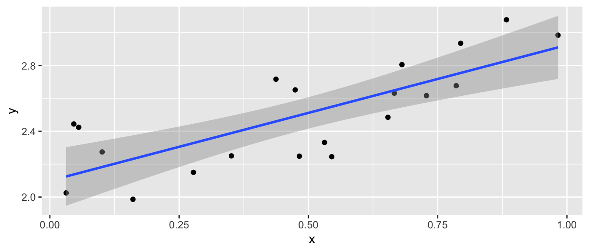
10.1 Pearson’s Correlation Coefficient
We first consider Pearson’s correlation coefficient, which is a statistics that measures the strength of the linear relationship between the predictor and response. Consider the following Pearson’s correlation statistic \[r=\frac{\sum_{i=1}^{n}\left(\frac{x_{i}-\bar{x}}{s_{x}}\right)\left(\frac{y_{i}-\bar{y}}{s_{y}}\right)}{n-1}\] where \(x_{i}\) and \(y_{i}\) are the x and y coordinate of the \(i\)th observation. Notice that each parenthesis value is the standardized value of each observation. If the x-value is big (greater than \(\bar{x}\)) and the y-value is large (greater than \(\bar{y}\)), then after multiplication, the result is positive. Likewise if the x-value is small and the y-value is small, both standardized values are negative and therefore after multiplication the result is positive. If a large x-value is paired with a small y-value, then the first value is positive, but the second is negative and so the multiplication result is negative.
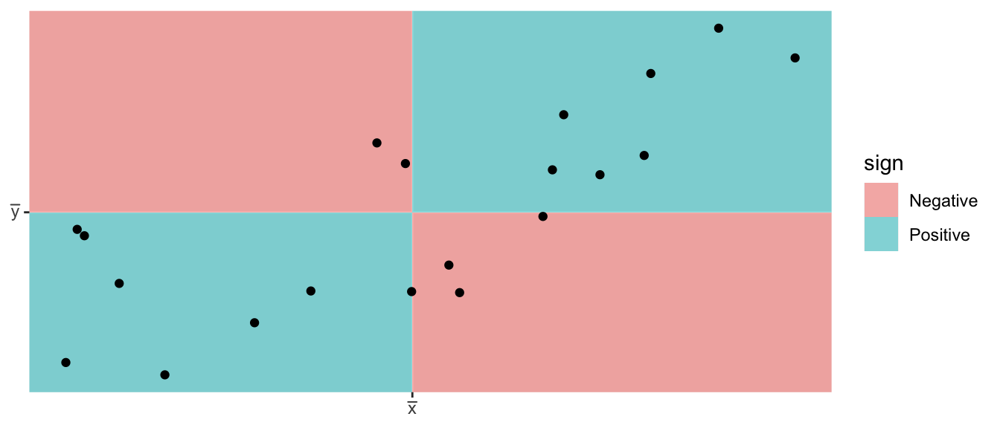
The following are true about Pearson’s correlation coefficient:
- \(r\) is unit-less because we have standardized the \(x\) and \(y\) values.
- \(-1\le r\le1\) because of the scaling by \(n-1\)
- A negative \(r\) denotes a negative relationship between \(x\) and \(y\), while a positive value of \(r\) represents a positive relationship.
- \(r\) measures the strength of the linear relationship between the predictor and response.
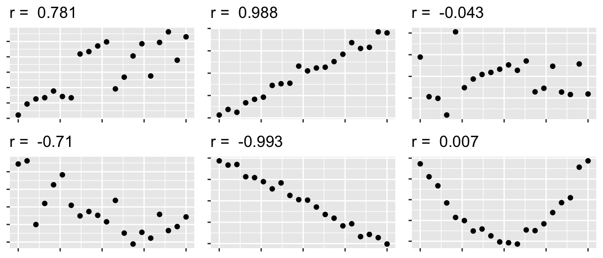
10.2 Model Theory
To scatterplot data that looks linear we often want to fit the model \[y_{i}=\beta_{0}+\beta_{1}x_{i}+\epsilon_{i}\;\;\;\textrm{where }\epsilon_{i}\stackrel{iid}{\sim}N\left(0,\sigma^{2}\right)\] where
| Parameter | Name | Interpretation |
|---|---|---|
| \(\beta_0\) | y-intercept | Height of regression line at \(x=0\) |
| \(\beta_1\) | slope | How much the line rises for a \(1\) unit increase in \(x\). |
| \(\sigma\) | Standard Deviation | The “typical” distance from a point to the regression line |
The assumptions of this model are:
- The relationship between the predictor and response is actually linear.
- The error terms come from a normal distribution.
- The variance of the errors is the same for every value of x (homoscedasticity).
- The error terms are independent.
Under this model, the expected value of an observation with covariate \(X=x\) is \(E\left(Y\,|\,X=x\right)=\beta_{0}+\beta_{1}x\) and a new observation has a standard deviation of \(\sigma\) about the line.
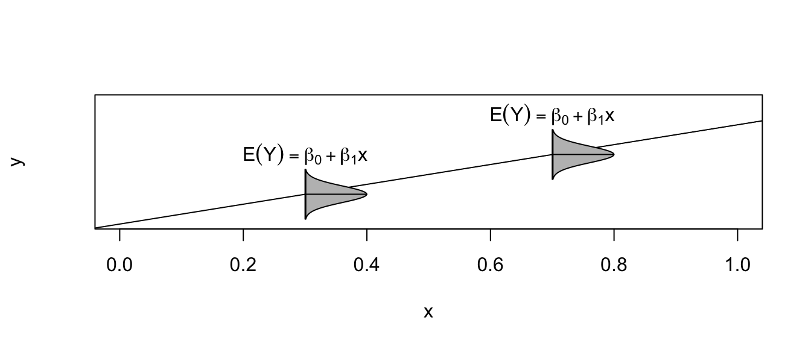
Given this model, how do we find estimates of \(\beta_{0}\) and \(\beta_{1}\)? In the past we have always relied on using some sort of sample mean, but it is not obvious what we can use here. Instead of a mean, we will use the values of \(\hat{\beta}_{0}\) and \(\hat{\beta}_{1}\) that minimize the sum of squared error (SSE) where \[\begin{aligned} \hat{y}_{i} &= \hat{\beta}_{0}+\hat{\beta}_{1}x_{i} \\ e_{i} &= y_{i}-\hat{y}_{i} \\ SSE &= \sum_{i=1}^{n}e_{i}^{2} \end{aligned}\]
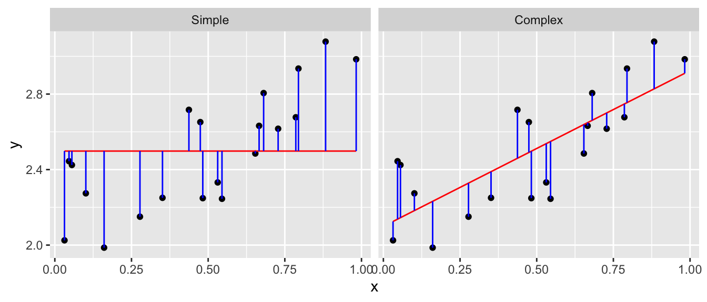
Fortunately there are simple closed form solutions for \(\hat{\beta}_{0}\) and \(\hat{\beta}_{1}\) \[\begin{aligned} \hat{\beta}_{1} &= r\,\left(\frac{s_{y}}{s_{x}}\right)\\ \hat{\beta_{0}} &= \bar{y}-\hat{\beta}_{1}\bar{x} \end{aligned}\]
and using these estimates several properties can be shown
- \(\hat{\beta}_{0}\) and \(\hat{\beta}_{1}\) are the intercept and slope values that minimize SSE.
- The regression line goes through the center of mass of the data (\(\bar{x}\),\(\bar{y}\)).
- The sum of the residuals is 0. That is: \(\sum e_{i}=0\).
- \(\hat{\beta}_{0}\) and \(\hat{\beta}_{1}\) are unbiased estimators of \(\beta_{0}\) and \(\beta_{1}\).
We are also interested in an estimate of \(\sigma^{2}\) and we will use our usual estimation scheme of \[\begin{aligned} \hat{\sigma}^{2} &= \frac{1}{n-2}\sum_{i=1}^{n}\left(y_{i}-\hat{y}_{i}\right)^{2} = \frac{\sum_{i=1}^{n}e_{i}^{2}}{n-2} = \frac{SSE}{n-2} = MSE \end{aligned}\]
where the \(-2\) comes from having to estimate \(\beta_{0}\) and \(\beta_{1}\) before we can estimate \(\sigma^{2}\). As in the ANOVA case, we can interpret \(\sigma\) as the typical distance an observation is from its predicted value.
As always we are also interested in knowing the estimated standard deviation (which we will call Standard Error) of the model parameters \(\beta_{0}\) and \(\beta_{1}\) and it can be shown that \[StdErr\left(\hat{\beta}_{0}\right)=\hat{\sigma}\sqrt{\frac{1}{n}+\frac{\bar{x}^{2}}{S_{xx}}}\] and \[StdErr\left(\hat{\beta}_{1}\right)=\hat{\sigma}\sqrt{\frac{1}{S_{xx}}}\] where \(S_{xx}=\sum\left(x_{i}-\bar{x}\right)^{2}\). These intervals can be used to calculate confidence intervals for \(\beta_{0}\) and \(\beta_{1}\) using the formulas: \[\hat{\beta}_{i}\pm t_{n-2}^{1-\alpha/2}StdErr\left(\hat{\beta}_{i}\right)\]
Again we consider the iris dataset that is available in R. I wish to examine the relationship between sepal length and sepal width in the species setosa.
setosa <- iris %>% filter( Species == 'setosa' ) # Just setosa!
ggplot(setosa, aes(x=Sepal.Length, y=Sepal.Width)) +
geom_point() +
labs(x="Sepal Length", y="Sepal Width", title='Setosa Irises') 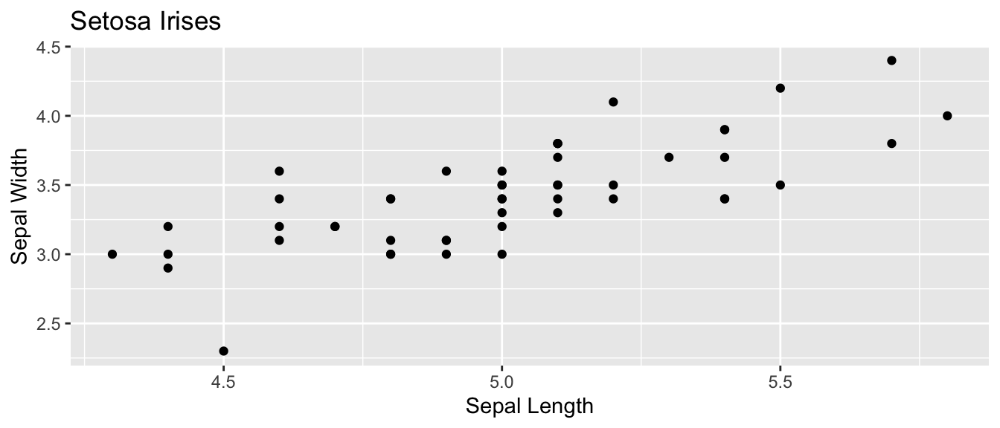
# Do all the crazy calculations "By Hand!"
x <- setosa$Sepal.Length
y <- setosa$Sepal.Width
n <- length(x)
r <- sum( (x-mean(x))/sd(x) * (y-mean(y))/sd(y) ) / (n-1)
b1 <- r*sd(y)/sd(x)
b0 <- mean(y) - b1*mean(x)
cbind(r, b0, b1)## r b0 b1
## [1,] 0.7425467 -0.5694327 0.7985283## [1] 0.06580573Sxx <- sum( (x-mean(x))^2 )
stderr.b0 <- sqrt(s2) * sqrt( 1/n + mean(x)^2 / Sxx)
stderr.b1 <- sqrt(s2) * sqrt(1 / Sxx )
cbind(stderr.b0, stderr.b1)## stderr.b0 stderr.b1
## [1,] 0.5217119 0.1039651## [1] -1.6184048 0.4795395## [1] 0.5894925 1.0075641Of course, we don’t want to have to do these calculations by hand. Fortunately statistics packages will do all of the above calculations. In R, we will use lm() to fit a linear regression model and then call various accessor functions to give me the regression output I want.
## [1] 0.7425467## (Intercept) Sepal.Length
## -0.5694327 0.7985283## 2.5 % 97.5 %
## (Intercept) -1.6184048 0.4795395
## Sepal.Length 0.5894925 1.0075641In general, most statistics programs will give a table of output summarizing a regression and the table is usually set up as follows:
| Coefficient | Estimate | Std. Error | t-stat | p-value |
|---|---|---|---|---|
| Intercept | \(\hat{\beta}_{0}\) | StdErr\((\hat{\beta}_0)\) | \(t_{0}=\frac{\hat{\beta}_0}{StdErr(\hat{\beta}_0)}\) | \(2*P(T_{n-2}>\vert t_0 \vert )\) |
| Slope | \(\hat{\beta}_{1}\) | StdErr\((\hat{\beta}_1)\) | \(t_{1}=\frac{\hat{\beta}_1}{StdErr(\hat{\beta}_1)}\) | \(2*P(T_{n-2}>\vert t_1 \vert )\) |
This table is printed by R by using the summary() function:
##
## Call:
## lm(formula = Sepal.Width ~ Sepal.Length, data = setosa)
##
## Residuals:
## Min 1Q Median 3Q Max
## -0.72394 -0.18273 -0.00306 0.15738 0.51709
##
## Coefficients:
## Estimate Std. Error t value Pr(>|t|)
## (Intercept) -0.5694 0.5217 -1.091 0.281
## Sepal.Length 0.7985 0.1040 7.681 6.71e-10 ***
## ---
## Signif. codes: 0 '***' 0.001 '**' 0.01 '*' 0.05 '.' 0.1 ' ' 1
##
## Residual standard error: 0.2565 on 48 degrees of freedom
## Multiple R-squared: 0.5514, Adjusted R-squared: 0.542
## F-statistic: 58.99 on 1 and 48 DF, p-value: 6.71e-10The first row is giving information about the y-intercept. In this case the estimate is \(-0.5694\) and the standard error of the estimate is \(0.5217\). The t-statistic and associated p-value is testing the hypotheses: \(H_{0}:\,\beta_{0}=0\) vs \(H_{a}:\,\beta_{0}\ne0\). This test is not usually of much interest. However because the equivalent test in the slope row testing \(\beta_{1}=0\) vs \(\beta_{1}\ne0\), the p-value of the slope row is very interesting because it tells me if I should include the slope variable in the model. If \(\beta_{1}\) could be zero, then we should drop the predictor from our model and use the simple model \(y_{i}=\beta_{0}+\epsilon_{i}\) instead.
There are a bunch of other statistics that are returned by summary(). The Residual standard error is just \(\hat{\sigma}=\sqrt{MSE}\) and the degrees of freedom for that error is also given. The rest are involved with the ANOVA interpretation of a linear model.
10.2.1 Anova Interpretation
Just as in the ANOVA analysis, we really have a competition between two models. The full model \[y_{i}=\beta_{0}+\beta_{1}x+\epsilon_{i}\] vs the simple model where x does not help predict \(y\) \[y_{i}=\beta_0+\epsilon_{i}\] Notice this is effectively forcing the regression line to be flay and I could have written the model using \(\beta_{0}=\mu\) to try to keep our notation straight. If I were to look at the simple model I would use \(\bar{y}=\hat{\beta}_0\) as the predicted value of \(y\) for any value of \(x\) and my Sum of Squared Error in the simple model will be \[SSE_{simple} = \sum_{i=1}^{n}\left(y_{i}-\hat{y}_{i}\right)^{2} = \sum_{i=1}^{n}\left(y_{i}-\hat{\beta}_0\right)^{2}\] and the appropriate Mean Squared Error is
\[MSE_{simple}=\frac{1}{n-1}\sum\left(y_{i}-\hat{\beta}_0\right)^{2}\]
We can go through the same sort of calculations for the full complex model and get \[SSE_{complex} = \sum_{i=1}^{n}\left(y_{i}-\hat{y}_{i}\right)^{2} = \sum_{i=1}^{n}\left(y_{i}-\left(\hat{\beta}_{0}+\hat{\beta}_{1}x_{i}\right)\right)^{2}\] Notice that \(\hat{\beta}_0\) term is in both models, but will not be numerically the same. Next we have \[MSE_{complex}=\frac{1}{n-2}\sum_{i=1}^{n}\left(y_{i}-\left(\hat{\beta}_{0}+\hat{\beta}_{1}x_{i}\right)\right)^{2}\] Just as in the AVOVA analysis, if we often like to look at the difference between \[SSE_{simple}-SSE_{comples}=SSE_{diff}\] and think of this quantity as the amount of variability that is explained by adding the slope parameter to the model. Just as in the AVOVA case we’ll calculate \[MSE_{diff}=SSE_{diff}/df_{diff}\] where \(df_{diff}\) is the number of parameters that we added to the simple model to create the complex one. In the simple linear regression case, \(df_{diff}=1\).
Just as in the ANOVA case, we will calculate an f-statistic to test the null hypothesis that the simple model suffices vs the alternative that the complex model is necessary. The calculation is \[f=\frac{MSE_{diff}}{MSE_{complex}}\] and the associated p-value is \(P\left(F_{1,n-2}>f\right)\). Notice that this test is exactly testing if \(\beta_{1}=0\) and therefore the p-value for the F-test and the t-test for \(\beta_{1}\) are the same. It can easily be shown that \(t_{1}^{2}=f\).
The Analysis of Variance table looks the same as what we have seen, but now we recognize that the rows actually represent the complex and simple models and the difference between them.
| Source | df | Sum Sq | MS | F | p-value |
|---|---|---|---|---|---|
| Difference | \(1\) | \(SSE_{diff}\) | \(MSE_{diff} = SSE_{diff}/1\) | \(f = \frac{MSE_{diff}}{MSE_{complex}}\) | \(P(F_{1,n-2} > f)\) |
| Complex | \(n-2\) | \(SSE_{complex}\) | \(MSE{complex} = SSE_{complex}/(n-2\) | ||
| Simple | \(n-1\) | \(SSE_{simple}\) |
As usual, the ANOVA table for the regression is available in R using the anova() command.
## Analysis of Variance Table
##
## Response: Sepal.Width
## Df Sum Sq Mean Sq F value Pr(>F)
## Sepal.Length 1 3.8821 3.8821 58.994 6.71e-10 ***
## Residuals 48 3.1587 0.0658
## ---
## Signif. codes: 0 '***' 0.001 '**' 0.01 '*' 0.05 '.' 0.1 ' ' 1But we notice that R chooses not to display the row corresponding to the simple model.
I could consider \(SSE_{simple}\) as a baseline measure of the amount of variability in the data. It is interesting to look at how much of that baseline variability has been explained by adding the additional parameter to the model. Therefore we’ll define the ratio \(R^{2}\) as: \[R^{2}=\frac{SSE_{diff}}{SSE_{simple}}=\frac{SSE_{simple}-SSE_{complex}}{SSE_{simple}}=r^{2}\] where \(r\) is Pearson’s Correlation Coefficient. \(R^{2}\) has the wonderful interpretation of the percent of variability in the response variable that can be explained by the predictor variable \(x\).
10.2.2 Confidence Intervals vs Prediction Intervals
There are two different types of questions that we might ask about predicting the value for some x-value \(x_{new}\).
We might be interested in a confidence interval for regression line. For this question we want to know how much would we expect the sample regression line move if we were to collect a new set of data. In particular, for some value of \(x\), say \(x_{new}\), how variable would the regression line be? To answer that we have to ask what is the estimated variance of \(\hat{\beta}_{0}+\hat{\beta}_{1}x_{new}\)? The variance of the regression line will be a function of the variances of \(\hat{\beta}_{0}\) and \(\hat{\beta}_{1}\) and thus the standard error looks somewhat reminiscent of the standard errors of \(\hat{\beta}_{0}\) and \(\hat{\beta}_{1}\). Recalling that we defined \(S_{xx}=\sum\left(x_{i}-\bar{x}\right)^{2}\), we have: \[\hat{Var}\left(\hat{\beta}_{0}+\hat{\beta}_{1}x_{new}\right)=\hat{\sigma}^{2}\left(\frac{1}{n}+\frac{\left(x_{new}-\bar{x}\right)^{2}}{S_{xx}}\right)\] and therefore its \(StdErr(\hat{\beta}_{0}+\hat{\beta}_{1}x_{new})\) is \[StdErr\left(\hat{\beta}_{0}+\hat{\beta}_{1}x_{new}\right)=\hat{\sigma}\sqrt{\frac{1}{n}+\frac{\left(x_{new}-\bar{x}\right)^{2}}{S_{xx}}}\]
We can use this value to produce a confidence interval for the regression line for any value of \(x_{new}\). \[Estimate \pm t\;StdErr\left(Estimate\right)\] \[\left(\hat{\beta}_{0}+\hat{\beta}_{1}x_{new}\right) \pm t_{n-2}^{1-\alpha/2}\;\;\hat{\sigma}\sqrt{\frac{1}{n}+\frac{\left(x_{new}-\bar{x}\right)^{2}}{S_{xx}}}\]
the expected value of new observation \(\hat{E}\left(Y\,|\,X=x_{new}\right)\). This expectation is regression line but because the estimated regression line is a function of the data, then the line isn’t the exactly the same as the true regression line. To reflect that, I want to calculate a confidence interval for where the true regression line should be.
I might instead be interested calculating a confidence interval for \(y_{new}\), which I will call a prediction interval in an attempt to keep from being confused with the confidence interval of the regression line. Because we have \[y_{new}=\beta_{0}+\beta_{1}x_{new}+\epsilon_{new}\]
then my prediction interval will still be centered at \(\hat{\beta}_{0}+\hat{\beta}_{1}x_{new}\) but the the uncertainty should be the sum of the uncertainty associated with the estimates of \(\beta_{0}\) and \(\beta_{1}\) and the additional variability associated with \(\epsilon_{new}\). In short, \[\begin{aligned} \hat{Var}\left(\hat{\beta}_{0}+\hat{\beta}_{1}x_{new}+\epsilon\right) &= \hat{Var}\left(\hat{\beta}_{0}+\hat{\beta}_{1}x_{new}\right)+\hat{Var}\left(\epsilon\right) \\ &= \hat{\sigma}^{2}\left(\frac{1}{n}+\frac{\left(x_{new}-\bar{x}\right)^{2}}{S_{xx}}\right)+\hat{\sigma}^{2} \end{aligned}\]
and the \(StdErr\left(\right)\) of a new observation will be
\[StdErr\left(\hat{y}_{new}\right)=\hat{\sigma}\sqrt{1+\frac{1}{n}+\frac{\left(x_{new}-\bar{x}\right)^{2}}{S_{xx}}}\]
So the prediction interval for a new observation will be: \[\left(\hat{\beta}_{0}+\hat{\beta}_{1}x_{new}\right)\pm t_{n-2}^{1-\alpha/2}\;\;\hat{\sigma}\sqrt{1+\frac{1}{n}+\frac{\left(x_{new}-\bar{x}\right)^{2}}{S_{xx}}}\]
To emphasize the difference between confidence regions (capturing where we believe the regression line to lay) versus prediction regions (where new data observations will lay) we note that as the sample size increases, the uncertainty as to where the regression line lays decreases, but the prediction intervals will always contain a minimum width due to the error associated with an individual observation. Below are confidence (red) and prediction (blue) regions for two different sample sizes.

In general, you will not want to calculate the confidence intervals and prediction intervals by hand. Fortunately R makes it easy to calculate the intervals. The function predict() will calculate the point estimates along with confidence and prediction intervals. The function requires the lm() output along with an optional data frame (if you want to predict values not in the original data).
ggplot(setosa, aes(x=Sepal.Length, y=Sepal.Width)) +
geom_point() +
ggtitle('Sepal Length vs Sepal Width')#fit the regression
model <- lm(Sepal.Width ~ Sepal.Length, data=setosa)
# display the first few predictions
head( predict(model, interval="confidence") )## fit lwr upr
## 1 3.503062 3.427519 3.578604
## 2 3.343356 3.267122 3.419590
## 3 3.183650 3.086634 3.280666
## 4 3.103798 2.991890 3.215705
## 5 3.423209 3.350256 3.496162
## 6 3.742620 3.632603 3.852637# predict at x = 5.0
predict(model,
interval="prediction", # prediction Interval
newdata=data.frame(Sepal.Length = 5.0)) # at x=5## fit lwr upr
## 1 3.423209 2.902294 3.944123We can create a nice graph of the regression line and associated confidence and prediction regions using the following code in R:
# ask for the confidence and prediction intervals
conf.region <- predict(model, interval='confidence')
pred.region <- predict(model, interval='prediction')
# add them to my original data frame
setosa <- setosa %>%
mutate( fit = fitted(model),
conf.lwr = conf.region[,2],
conf.upr = conf.region[,3],
pred.lwr = pred.region[,2],
pred.upr = pred.region[,3])# make a nice plot
ggplot(setosa) +
geom_point( aes(x=Sepal.Length, y=Sepal.Width) ) +
geom_line( aes(x=Sepal.Length, y=fit), col='red' ) +
geom_ribbon( aes(x=Sepal.Length, ymin=conf.lwr, ymax=conf.upr), fill='red', alpha=.4) +
geom_ribbon( aes(x=Sepal.Length, ymin=pred.lwr, ymax=pred.upr), fill='blue', alpha=.4)
It is worth noting that these confidence intervals are all point-wise confidence intervals. If I want to calculate confidence or prediction intervals for a large number of \(x_{new}\) values, then I have to deal with the multiple comparisons issue. Fortunately this is easy to do in the simple linear regression case. Instead of using the \(t_{n-2}^{1-\alpha/2}\) quantile in the interval formulas, we should use \(W=\sqrt{2*F_{1-\alpha,\,2,\,n-2}}\). Many books ignore this issue as does the predict() function in R.
10.3 Extrapolation
The data observed will inform a researcher about the relationship between the x and y variables, but only in the range for which you have data! Below are the winning times of the men’s 1500 meter Olympic race.
data(men1500m, package='HSAUR2')
small <- men1500m %>% filter( year != 1896 ) # Remove the 1896 Olympics
# fit the model and get the prediction interval
model <- lm( time ~ year, data=small )
small <- cbind(small, predict(model, interval='prediction') )
ggplot(small, aes(x=year, y=time, ymin=lwr, ymax=upr)) +
geom_point() +
geom_line( aes(y=fit), col='red' ) +
geom_ribbon( fill='light blue', alpha=.4) +
labs( x='Year', y='Time (s)', title='Winning times of Mens 1500 m' ) +
theme_bw()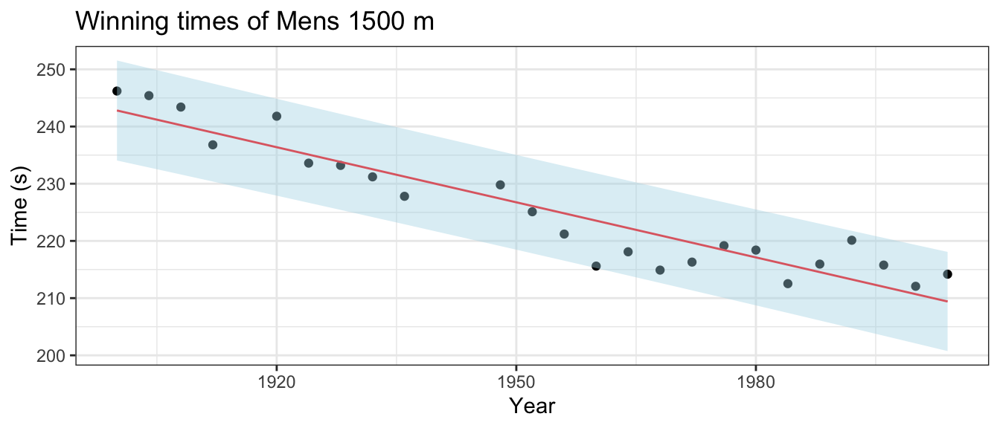
If we are interested in predicting the results of the 2008 and 2012 Olympic race, what would we predict?
## fit lwr upr
## 1 208.1293 199.3971 216.8614
## 2 206.8451 198.0450 215.6453We can compare the predicted intervals with the time actually recorded by the winner of the men’s 1500m. In Beijing 2008, Rashid Ramzi from Brunei won the event in 212.94 seconds and in London 2012 Taoufik Makhloufi from Algeria won in 214.08 seconds. Both times are within the corresponding prediction intervals, but clearly the linear relationship must eventually change and therefore our regression could not possibly predict the winning time of the 3112 race.
## fit lwr upr
## 1 -146.2973 -206.7705 -85.8240210.4 Checking Model Assumptions
As in the ANOVA analysis, we want to be able to check the model assumptions. To do this, we will examine the residuals \(e_{i}=y_{i}-\hat{y}_{i}\) for normality using a QQ-plot as we did in ANOVA. To address the constant variance and linearity assumptions we will look at scatterplots of the residuals vs the fitted values \(\hat{y}_{i}\). For the regression to be valid, we want the scatterplot to show no discernible trend. There are two patterns that commonly show up that indicate a violation of the regression assumptions.
set.seed(2233);
par(mfrow=c(1,3));
n <- 20;
x <- seq(0,1,length=n);
data <- data.frame(
Fitted=c(x,x,x),
Residual=c(rnorm(n,0,.25), rnorm(n,(2*x-1)^2-.375, .2), rnorm(n,0,x*.45)),
Type=factor(rep(1:3, each=n), labels=c('No Trend', 'Non-Linear', 'Non-Constant Variance') ));
for(i in 1:3){
index <- 1:n + n*(i-1);
plot(data$Fitted[index], data$Residual[index],
xlab='Fitted', ylab='Residual', main=data$Type[index[1]] );
abline(0,0, lty=2);
}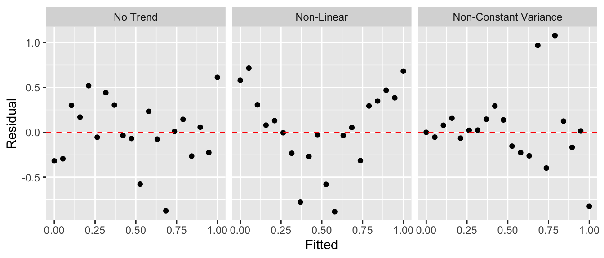
To illustrate this, we’ll consider the cherry tree dataset that comes with R. The goal will be predicting the volume of lumber produced by a cherry tree of a given diameter. The data are given in a dataset pre-loaded in R called trees.
Step one: Graph the data. The first step in a regression analysis is to graph the data and think about if a linear relationship makes sense.
## Girth Height Volume
## 1 8.3 70 10.3
## 2 8.6 65 10.3
## 3 8.8 63 10.2
## 4 10.5 72 16.4
## 5 10.7 81 18.8
## 6 10.8 83 19.7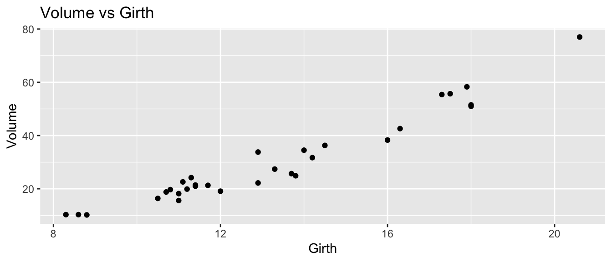
Initially, it looks like a line is a pretty good description of this relationship.
Step two: Fit a regression and examine the diagnostic plots.
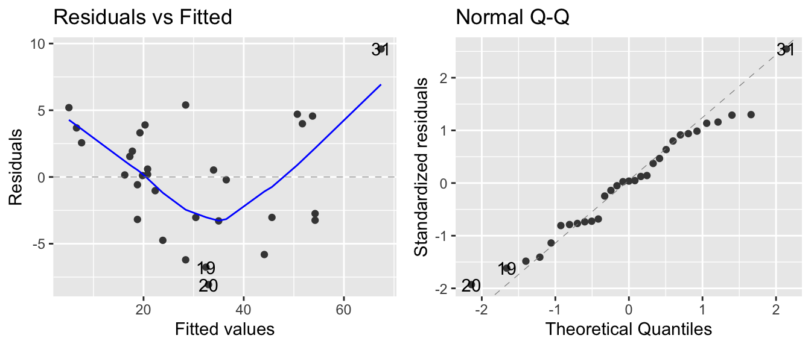
The normality assumption isn’t too bad, but there is a strong trend in the residual plot. The curvature we see in the residual group is present in the original scatterplot, but it is more obvious. At this point I would think about a slightly more complicated model, e.g. should we include height in the model or perhaps Girth^2? The implications of both of these possibilities will be explored in STA 571 but for now we’ll just continue using the model we have.
Step three: Plot the data and the regression model.
trees <- cbind( trees, predict(model, interval='confidence') )
head(trees) # now we have the fit, lwr, upr columns## Girth Height Volume fit lwr upr
## 1 8.3 70 10.3 5.103149 2.152294 8.054004
## 2 8.6 65 10.3 6.622906 3.799685 9.446127
## 3 8.8 63 10.2 7.636077 4.896577 10.375578
## 4 10.5 72 16.4 16.248033 14.156839 18.339228
## 5 10.7 81 18.8 17.261205 15.235884 19.286525
## 6 10.8 83 19.7 17.767790 15.774297 19.761284ggplot(trees, aes(x=Girth)) +
geom_ribbon( aes( ymin=lwr, ymax=upr), alpha=.4, fill='pink' ) +
geom_line( aes(y=fit), color='red') +
geom_point(aes(y=Volume)) 
In this graph we see that we underestimate the volume for small girths, overestimate for medium values, and underestimate for large girths. So we see the same pattern of the residuals in this graph as we saw in the residual graph. While the model we’ve selected isn’t as good as it could be, this isn’t horribly bad and might suffice for a first pass
“All models are wrong, but some are useful.” George Box.
Step four: Evaluate the model coefficients.
##
## Call:
## lm(formula = Volume ~ Girth, data = trees)
##
## Residuals:
## Min 1Q Median 3Q Max
## -8.065 -3.107 0.152 3.495 9.587
##
## Coefficients:
## Estimate Std. Error t value Pr(>|t|)
## (Intercept) -36.9435 3.3651 -10.98 7.62e-12 ***
## Girth 5.0659 0.2474 20.48 < 2e-16 ***
## ---
## Signif. codes: 0 '***' 0.001 '**' 0.01 '*' 0.05 '.' 0.1 ' ' 1
##
## Residual standard error: 4.252 on 29 degrees of freedom
## Multiple R-squared: 0.9353, Adjusted R-squared: 0.9331
## F-statistic: 419.4 on 1 and 29 DF, p-value: < 2.2e-16## 2.5 % 97.5 %
## (Intercept) -43.825953 -30.060965
## Girth 4.559914 5.571799From the summary output, we can see several things:
The intercept term \(\hat{\beta}_{0}\) is significantly different than zero. While we should expect that a tree with zero girth should have zero volume, our model predicts a volume of -36.9, which is obviously ridiculous. I’m not too worried about this because we have no data from trees that small and the intercept is quite the extrapolation from the range of Girth values we actually have. This is primarily being driven by the real relationship having curvature and our model has no curvature in it. So long as we don’t use this model to predict values too far away from our data points, I’m happy.
The slope is statistically significantly positive. We see an estimate an increase of 5 units of Volume for every 1 unit increase in Girth.
The estimate \(\hat{\sigma}\) is given by the residual standard error and is 4.252 and that is interpreted as the typical distance away from the regression line.
The R-sq value gives the amount of variability in the data that is explained by the regression line as \(93.5\%\). So the variable Girth explains a huge amount of the variability in volume of lumber a tree produces.
Finally, the F-test is comparing the complex vs the simple model, which in this case, reduces to just testing if the slope term, \(\beta_{1}\), could be zero. In simple regression, the F-statistic is the square of the t-statistic for testing the slope. That is, F-statistic = \(419.4 = 20.48^{2}\). The p-values are the same for the two tests because they are testing exactly the same hypothesis.
10.5 Common Problems
10.5.1 Influential Points
Sometimes a dataset will contain one observation that has a large effect on the outcome of the model. Consider the following datasets where the red denotes a highly influential point and the red line is the regression line including the point.
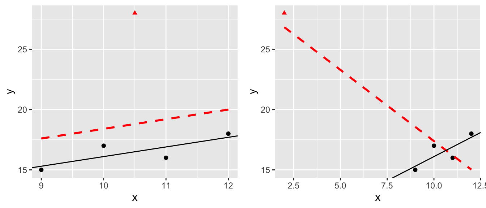
The question of what to do with influential points is not easy to answer. Sometimes these are data points that are a result of lab technician error and should be removed. Sometimes they are the result of an important process that is not well understood by the researcher. It is up to the scientist to figure out which is the case and take appropriate action.
One solution is to run the analysis both with and without the influential point and see how much it affects your inferences.
10.5.2 Transformations
When the normality or constant variance assumption is violated, sometimes it is possible to transform the data to make it satisfy the assumption. Often times count data is analyzed as log(count) and weights are analyzed after taking a square root or cube root transform.
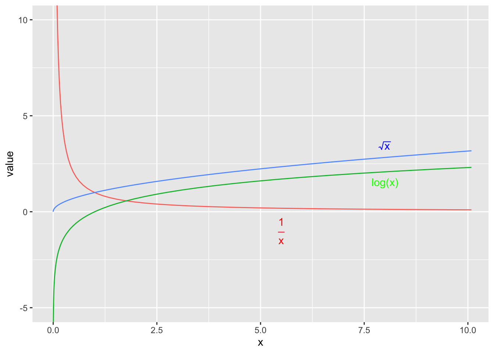
We have the option of either transforming the x-variable or transforming the y-variable or possibly both. One thing to keep in mind, however, is that transforming the x-variable only effects the linearity of the relationship. Transforming the y-variable effects both the linearity and the variance.
set.seed(-838)
par(mfrow=c(1,3))
n <- 40
x <- seq(1,30, length=n);
y <- 2 + 30*exp((30-x)/10) + rnorm(n, sd=20)
y <- abs(y)
plot(x,y); abline(coef(lm(y~x)));
plot(x, log(y)); abline(coef(lm(I(log(y))~x)));
plot(x^(1/3), y); abline(coef(lm(y~I(x^(1/3)))));
Unfortunately it is not always obvious what transformation is most appropriate. The Box-Cox family of transformations for the y-variable is \[ f(y\,|\,\lambda) = \begin{cases} y^{\lambda} & \;\;\textrm{if}\,\,\lambda\ne0\\ \log y & \;\;\textrm{if}\,\,\lambda=0 \end{cases}\] which includes squaring (\(\lambda=2\)), square root (\(\lambda=1/2\)) and as \(\lambda \to 0\) the transformation converges to \(\log y\). (To do this correctly we should define the transformation in a more complicated fashion, but that level of detail is unnecessary here.) The transformation is selected by looking at the profile log-likelihood value of different values of \(\lambda\) and we want to use the \(\lambda\) that maximizes the log-likelihood.
Of course, we also want to use a transformation that isn’t completely obscure and is commonly used in the scientific field, so square roots, reciprocals, and logs are preferred.

## 'data.frame': 40 obs. of 2 variables:
## $ x: num 0 0.769 1.538 2.308 3.077 ...
## $ y: num 2 3.08 2.92 4.17 5.44 ...
Here we see the resulting confidence interval for \(\lambda\) contains 0, so a \(\log\) transformation would be most appropriate.
Unfortunately there isn’t a matching procedure for deciding how to transform the \(x\) covariate. Usually we spend a great deal of time trying different transformations and see how they affect the scatterplot and using transformations that are common in whatever field the researcher is working in.
In general, deciding on a transformation to use is often a trade-off between statistical pragmatism and interpretability. In cases that a transformation is not possible, or the interpretation is difficult, it is necessary to build more complicated models that are hopefully interpretable. We will explore these issues in great length in STA 571.
10.6 Exercises
Use the following data below to answer the questions below
x 3 8 10 18 23 28 y 14 28 43 62 79 86 Plot the data in a scatter plot. The following code might be useful:
We will first calculate the regression coefficients and their estimated standard deviations by hand (mostly).
- Use R to confirm that that the following summary statistics are correct:
\(\bar{x}=15\) \(s_x=9.59\) \(S_{xx}=460\) \(\bar{y}=52\) \(s_y=28.59\) \(r = 0.9898\) Using the above statistics, by hand calculate the estimates \(\hat{\beta}_{0}\) and \(\hat{\beta}_{1}\).
For each data point, by hand calculate the predicted value \(\hat{y}_{i}=\hat{\beta}_{0}+\hat{\beta}_{1}x_{i}\).
For each data point, by hand calculate the estimated error term \(\hat{\epsilon}_{i}=y_{i}-\hat{y}_{i}\).
Calculate the MSE for the complex model. Using the MSE, what is \(\hat{\sigma}\)?
By hand, calculate the estimated standard deviation (which is often called the standard error) of \(\hat{\beta}_{0}\) and \(\hat{\beta}_{1}\).
Use the R function
lm()to fit a regression to these data.Using the
predict()function, confirm your hand calculation of the \(\hat{y}_{i}\) values.Using the
resid()function, confirm your hand calculation of the \(\hat{\epsilon}_{i}\) terms.Using the
summary()function, confirm your hand calculations of \(\hat{\beta}_{0}\) and \(\hat{\beta}_{1}\) and their standard errors.
Again using R’s built in functions, give a 95% confidence interval for \(\beta_{1}\).
Using the appropriate R output, test the hypothesis \(H_{0}:\;\beta_{1}=0\) versus the alternative \(H_{a}:\;\beta_{1} \ne 0\).
Give the R^{2} value for this regression.
What is the typical distance to the regression line?
Create a nice graph of the regression line and the confidence interval for the true relationship using the following code:
Often I want to create the confidence region myself (perhaps to use a prediction interval instead of a confidence interval), and we could use the following code:
library(dplyr) model <- lm( y ~ x, data=p1.data ) p1.data <- p1.data %>% mutate( yhat = predict(model), lwr = predict(model, interval='confidence')[,2], upr = predict(model, interval='confidence')[,3] ) # make a nice graph ggplot(p1.data, aes(x=x)) + geom_ribbon( aes(ymin=lwr, ymax=upr), fill='pink', alpha=.2 ) + geom_line( aes( y=yhat), color='green' ) + geom_point( aes( y=y ), color='black' )
Olympic track and field records are broken practically every Olympics. The following is output comparing the gold medal winning performance in the men’s long jump (in inches) versus the years 00 to 84. (In this data set, the year 00 represents 1900, and 84 represents 1984. This is a pre Y2K dataset.) There were \(n=19\) Olympic games in that period.
Fill in the blanks in the following summary and anova tables:
Summary:
Coefficients Estimate Std Error t-value \(Pr(>|t|)\) (Intercept) 283.45 4.28 < 2e-16 Year 0.613 0.0841 7.289 1.27e-06 Residual Standard Error = \(\;\;\;\;\;\;\;\;\;\;\) R-sq = \(\;\;\;\;\;\;\;\;\;\;\) Analysis of Variance:
Source df Sum Sq Mean Sq F-value Pr(>F) Year Residuals 95.19 Total 18 6673.2
Ott & Longnecker 11.45&47 - In the preliminary studies of a new drug, a pharmaceutical firm needs to obtain information on the relationship between the dose level and potency of the drug. In order to obtain this information, a total of 18 test tubes are inoculated with a virus culture and incubated for an appropriate period of time. Three test tubes are randomly assigned to each of 6 different dose levels. The 18 test tubes are then injected with the randomly assigned dose level of the drug. the measured response is the protective strength of the drug against the virus culture. Due to a problem with a few of the test tubes, only 2 responses were obtained for dose levels 4,8, and 16. The data are:
Dose 2 2 2 4 4 8 8 16 16 16 32 32 64 64 64 Response 5 7 3 10 14 15 17 20 21 19 23 29 28 31 30 - We will first fit a regression model to the raw data.
- Plot the data and comment on the relationship between the covariate and response.
- Fit a linear regression model to these data using the lm() function.
- Examine the plot of the residuals vs fitted values. Does there appear to be a problem? Explain.
- Often in drug evaluations, a logarithmic transformation of the dose level will yield a linear relationship between the response variable and the independent variable. Let \(x_{i}=\log\left(dose_{i}\right)\) (where log is the natural log). Notice that because the constant variance assumption seems to be met, I don’t wish to transform \(y\).
- Plot the response of the drug vs the natural log of the dose levels. Does it appear that a linear model is appropriate?
- Fit the linear regression model to these data.
- From a plot of the residuals vs the fitted values, does the linear model seem appropriate?
- Examine the QQplot of the residuals vs the theoretical normal quantiles. Does the normality assumption appear to be violated? Also perform a Shapiro-Wilks test on the residuals to test of a statistically significant difference from normality. Comment on these results.
- What is change in the response variable for every one unit change in log(dose)?
- Give a \(95\%\) confidence interval for the y-intercept and slope parameters. Is the log(dose) level a statistically significant predictor of the response?
- We will first fit a regression model to the raw data.